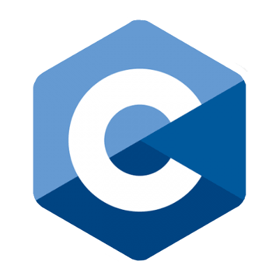
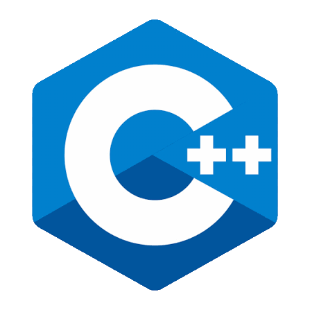
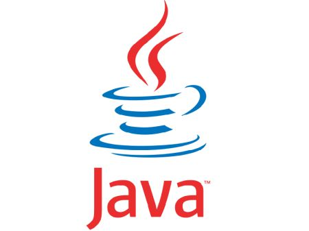

← Voltar para trilhas
Trilha Back-end
Principais linguagens
Siga a ordem abaixo para construir uma base sólida em lógica, memória e desenvolvimento de sistemas.
-

Passo 1 • FundamentosLinguagem C
A base da computação moderna. Entenda como a memória funciona, trabalhe com ponteiros, estruturas de dados e lógica de baixo nível.
Começar C -

Passo 2 • Performance & POOC++
Evolua os conceitos de C com Programação Orientada a Objetos, templates e alta performance para sistemas críticos e motores gráficos.
Começar C++ -

Passo 3 • Sistemas CorporativosJava
Uma das linguagens mais usadas no mercado de back-end. Domine classes, tipagem forte e o ecossistema para construir APIs e servidores robustos.
Começar Java